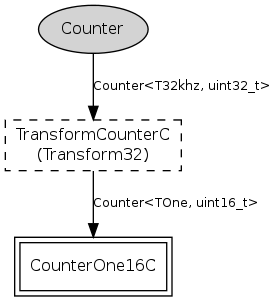

32-bit 32kHz Counter component as per TEP102 HAL guidelines. The mica family 32kHz clock is built on hardware timer 1, and actually runs at CPU frequency / 256. You can use the MeasureClockC.cyclesPerJiffy() command to figure out the exact frequency.
